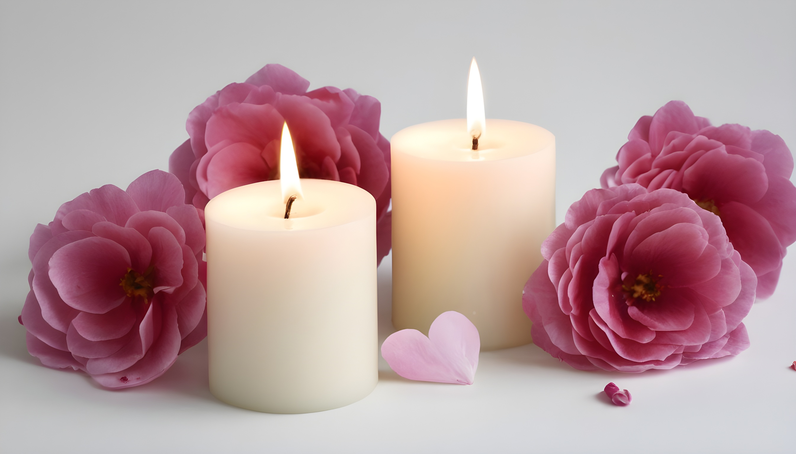
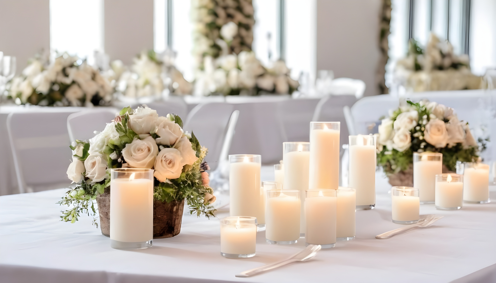
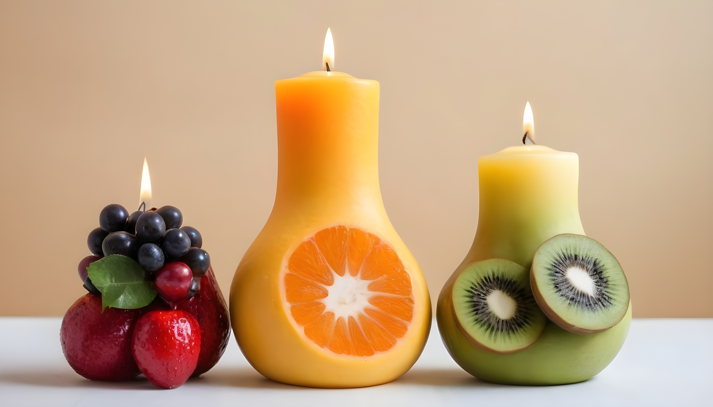

Encontrarás una amplia selección de velas aromáticas en nuestro local. Desde velas clásicas en forma de vasos de cristal hasta velas en tarros con tapa, cada una de nuestras velas está diseñada cuidadosamente para brindarte una experiencia visual y olfativa excepcional. Además, ofrecemos una variedad de aromas, desde cítricos y florales hasta maderas y especias, para que puedas encontrar el aroma perfecto que se adapte a tus gustos y preferencias.
 VELAS NORMALES:
Las velas normales proporcionan una luz suave y cálida que crea una atmósfera acogedora y relajante en cualquier espacio. Son ideales para crear un ambiente íntimo y romántico, o simplemente para disfrutar de una iluminación suave durante momentos de relajación.
VELAS PARA EVENTOS :

VELAS DECORATIVAS: